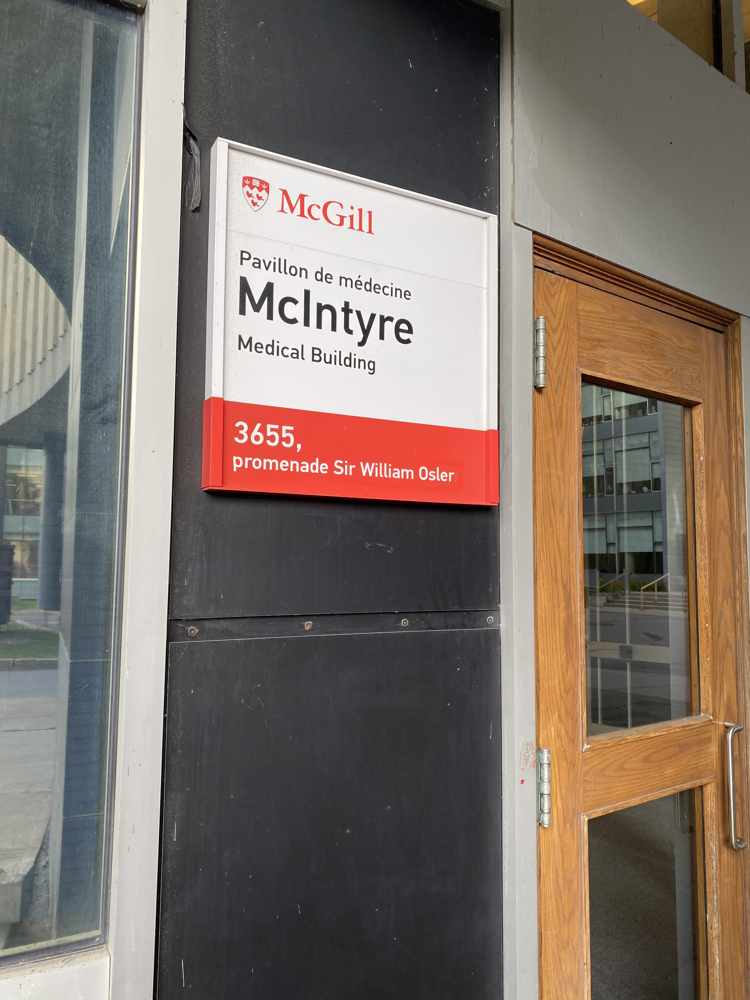
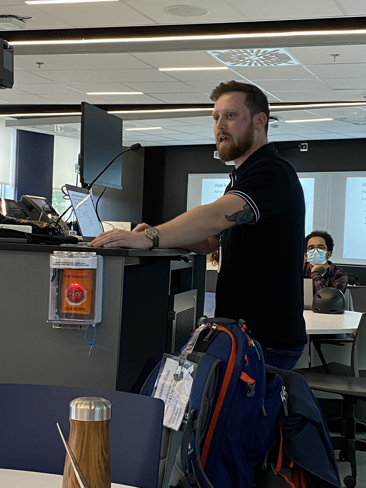
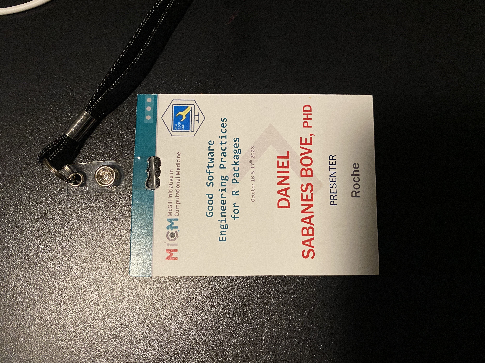
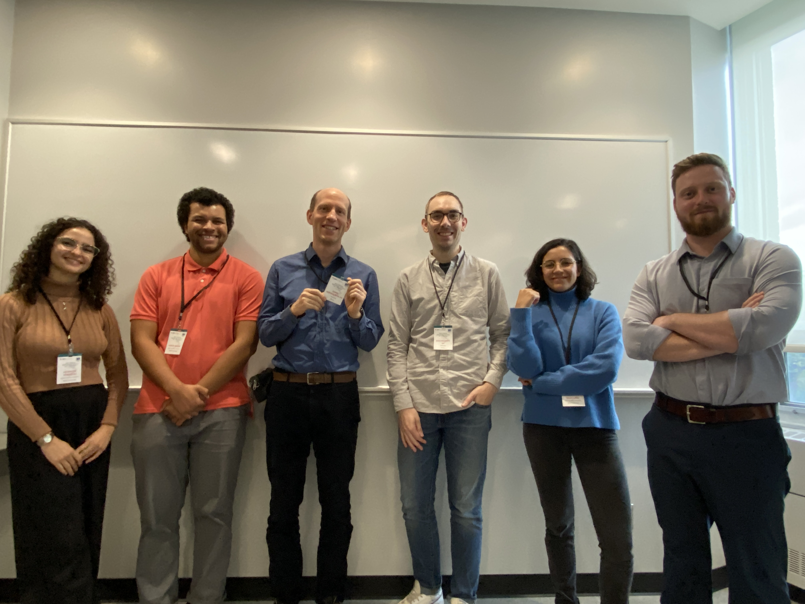

Montreal workshop
On Monday and Tuesday this week (16 and 17 October), Doug Kelkhoff (Roche), Phil Boileau (Analysis Group) and Daniel Sabanés Bové (Roche) held another edition of the Good Software Engineering Practices for R Packages (or short GSWEP4RP) workshop - this time in Montreal, QC, Canada.
  

With more than 33 participants this was another success for openstatsware!
We would like to thank the McGill team which made this event possible - the workshop was part of their “McGill initiative in Computational Medicine” training series. Thanks a lot to:
- Larisa Morales Soto
- Adrien Osakwe
- Georgette Femerling Romero
- Kevin Liang
- Prof. Celia M. T. Greenwood
Everything worked very smoothly and it was a pleasure to visit the McGill University and engage with the curious students and faculty!
As usual, the updated course materials are online under CC-BY license here and the source code for all materials is available here.
Celebrating 5 workshops in 2023
This is a milestone for the openstatsware team, because we now have run 5 workshops just in 2023 on this topic in 4 different countries:
- 10th February 2023, Basel, CH
- 24th March 2023, Shanghai, CN
- 20th July 2023, San José, CA, US
- 26th September 2023, Rockville, MD, US
- 16th and 17th October 2023, Montréal, QC, CA
This is part of achieving our secondary objective on disseminating best practices of software engineering into the biostatistics community.
Thanks a lot to all the openstatsware members and friends who created the materials and presented this year:
- Friedrich Pahlke
- Kevin Kunzmann
- Liming Li
- Shuang Li
- Joe Zhu
- Matt Secrest
- Laura Harris
- Daniel Sjoberg
- Andrew Bean
- Ryan (Biju) Wang
- Doug Kelkhoff
- Phil Boileau
- Daniel Sabanés Bové